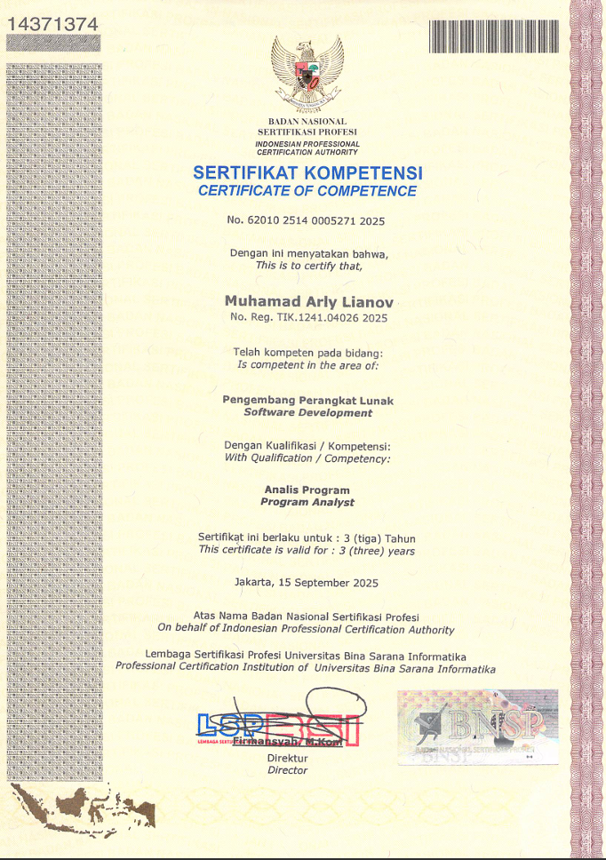
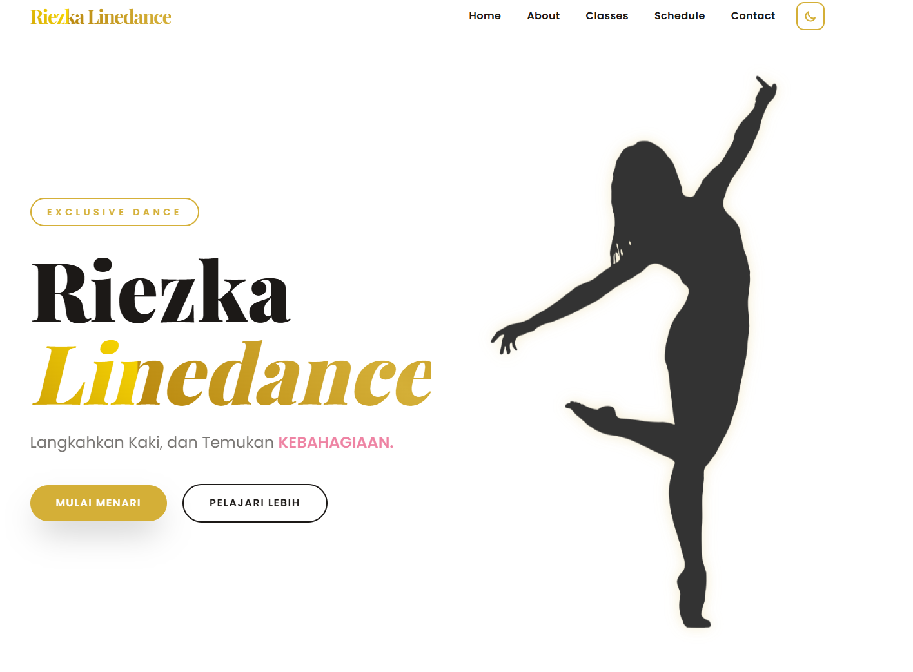
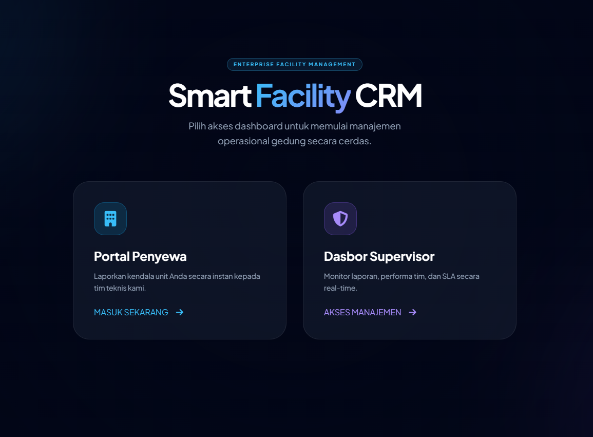

Seorang Digital Crafter yang fokus pada pengembangan website modern, interaktif, dan performa tinggi dengan pengalaman visual yang memukau.
2022 — 2026
S1 Sistem Informasi
2017 — 2020
Ilmu Pengetahuan Sosial
2014 — 2017
2008 — 2014
JUNI 2022 — NOVEMBER 2025
AGUSTUS 2021 — JUNI 2022

Verified
Badan Nasional Sertifikasi Profesi ( BNSP )
Jakarta 15 September 2025

Riezka Linedance
Transformasi identitas digital perusahaan dengan desain yang elegan, responsif, dan performa yang optimal untuk komunitas seni tari linedance.

Internal Management
Sistem manajemen hubungan pelanggan yang efisien untuk mengelola data, interaksi, dan komplain tenant secara real-time.